Source Level Debugging with Intel(R) SVT CCA¶
Intel(R) Trace Hub¶
The Intel(R) Trace Hub (Intel(R) TH) hardware is a set of functional blocks with the ability to perform full system debugging. The Intel Trace Hub is composed of trace sources, a global hub, trace destinations, and a trigger unit.
- Trace sources include internal hardware signals, performance data from the SoC Hardware, and software/firmware trace and debug data from the Software Trace Hub.
- Trace destinations include system memory, a MIPI* PTI port, and USB.
- The Global Trace Hub routes the data from the trace sources to the trace destinations according to the user’s configuration (via software).
- Trigger Unit controls the starting and stopping of tracing operations.
The Intel(R) Trace Hub is designed and aligned with industry-standard debug methods and tools.
Intel(R) Direct Connect Interface (DCI) technology¶
Debug using functional connections available in the complete, closed, form-factor system is referred to as Closed Chassis Debug. Intel(R) Direct Connect Interface (DCI) technology provides Closed Chassis Debug capabilities by forwarding trace data coming from the Intel(R) Trace Hub to a DCI transport (a physical USB receptacle).
The DCI technology is available either in-band or out-of-band to the USB interface.
- The out-of-band, referred to as DCI OOB, is independent of the USB protocol and simply uses the pins of the USB receptacle and bypasses the USB controller. Since it does not use the USB protocol, an external adapter is required to communicate with the test system.
- The in-band, referred to as USB Debug Class, uses the USB protocol to communicate with a debug endpoint in the USB controller. Both communicate with various different debug agents in the SoC to perform debug communication, run control, DMA, and trace.
Intel(R) SVT CCA¶
Intel® Silicon View Technology Closed Chassis Adapter (also known as SVTCCA) is used to transmit the out-of-band protocol for DCI OOB and provides access to DFx-features, like JTAG and Run-control, through USB3 port(s) on Intel® Direct Connect Interface (DCI) enabled silicon and platforms. The tool enables closed-chassis use-cases where USB3-hosted DCI is limited, intermittent, or unavailable.
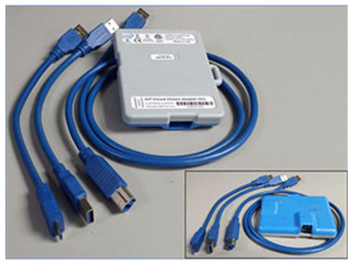Intel(R) System Debugger¶
Intel(R) System Studio is a cross-platform tool suite and includes Intel(R) System Debugger that provides System Debug and System Trace capabilities.
The Eclipse* integrated source-line debugger enables deep analysis of Slim Bootloader code and System-on-chip (SoC) peripheral registers while the System Trace capabilities provides the ability to capture, decode, and display traces from hardware, firmware, and software sources via Intel® Trace Hub.
https://software.intel.com/content/www/us/en/develop/tools/system-studio/debug.html
Debug Environmment Setup¶
Setting up a debug using Intel(R) SVTCCA involves several steps including target side cnfiguration, physical connection of Intel(R) SVTCCA hardware and host side Intel(R) System Debugger setup.
Platform based on 10th Generation Intel® Core™ desktop processors and chipsets formerly known as Comet Lake with a 22nm Platform Controller Hub (PCH) is used as example here.
Intel(R) SVTCCA hardware setup¶
Intel(R) SVTCCA has two USB ports (Target & Host).
- Connect the short USB cable to Intel(R) SVTCCA USB port labelled “Target” and to debug USB Port in target under debug.
- Please connect another cable with Intel(R) SVTCCA and host.
- Two LEDs in the Intel CCA will Glow
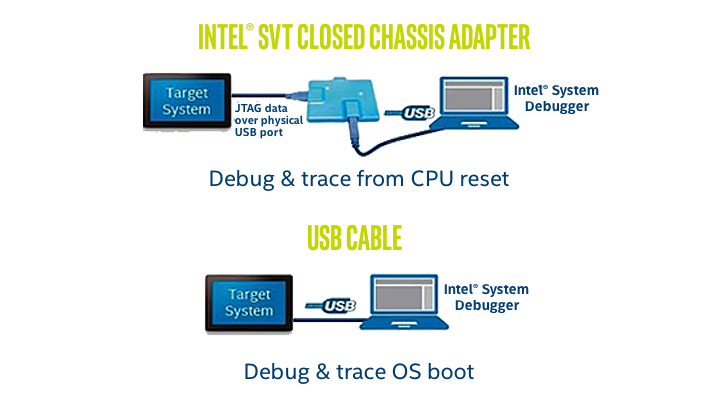
- Firmware - Should be Green
- DCI Connect – Should be Red.
FSP configuration¶
Debugging using Intel(R) DCI requires debugging to be enabled in the target SOC. There are several FSP-M UPD settings that will have to be configured to enable debugging.
For example, the FSP for 10th Generation Intel® Core™ desktop processors and chipsets formerly known as Comet Lake with a 22nm Platform Controller Hub (PCH) provides the following FSP-M UPD configuration options - PchDciEn, PlatformDebugConsent, PchTraceHubMode and the following FSP-S configuration options - DebugInterfaceEnable.
Note
Please refer the FSP integration guide for a list of SOC specific UPD configuration options related to enabling debug.
The SBL may provide configuration options that can be used to configure these FSP UPD. If such SBL configuration options are not available, then either the FSP UPD defaults are configured diretcly through the FSP configuration tool or the SBL source has to be modified (UpdateFspConfig) to configure these FSP UPD during boot.
Intel(R) System Debugger setup¶
Open the 85-isysdbg-env.bat file from Intel(R) System Debugger installation directoty and add the below lines towards the end.
- set ISYSDBG_LOG_LEVELS=context,ipc,protocol,dbghelp,uefi
- set ISYSDBG_FLASH_BASE=0x9B000000
- set ISYSDBG_FLASH_SIZE=0x02000000
Note
FLASH Base and Size are project specific. Please refer the project boardconfig.py for project specific settings.
Debug steps¶
Setting up Debug Connection:
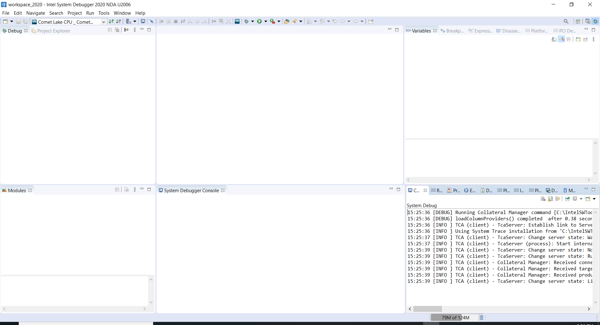
- Power on the Board.
- Open the Intel(R) System Debugger.
- Please choose the default workspace.
Setting up Debug Connection:
- First step is to create new connection for every target board. Here, we need to choose the type of Target and also choose the debug probe type.
Example
Target type – Comet Lake CPU / Comet Lake PCH-V. Connection method – Intel DCI OOB Via Intel SVT Closed Chassis Adapter (CCA).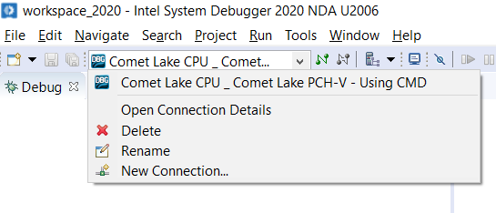 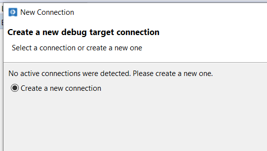
- Click the Debug Drop down and choose the “New Connection”
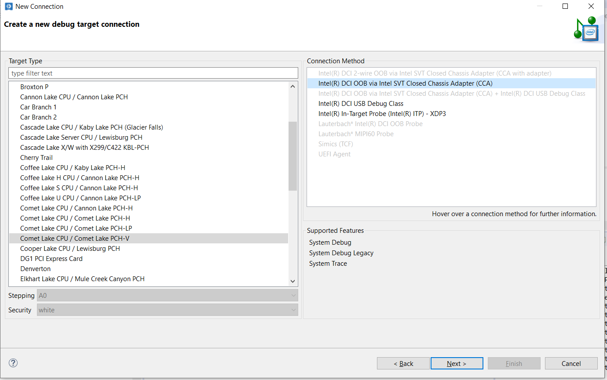
- Click next,
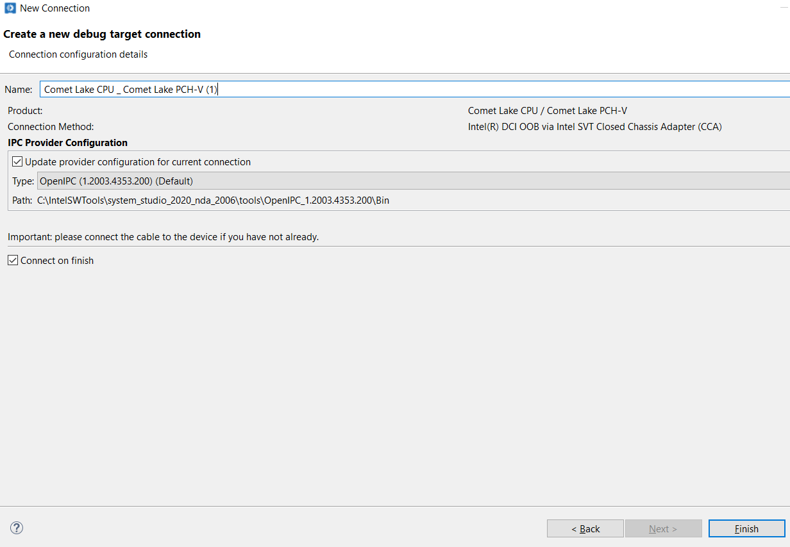
- Click next, then
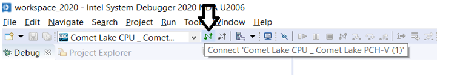
- Click Finish to click the setup.
- Then Click the Connect button as shown in figure:
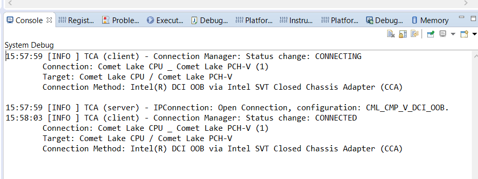
- After clicking this, we can see the below message in the System Debug Console:
- Above message will confirm Target and Debugger type which is used. The status will be shown as “CONNECTED”.
- Two LEDs in the Intel CCA will Glow:
- Firmware - Should be Green.
- DCI Connect – Should be Green.
Setting up Debug Configuration:
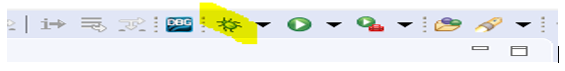
- Click the “Bug” like button (highlighted) in the tool bar
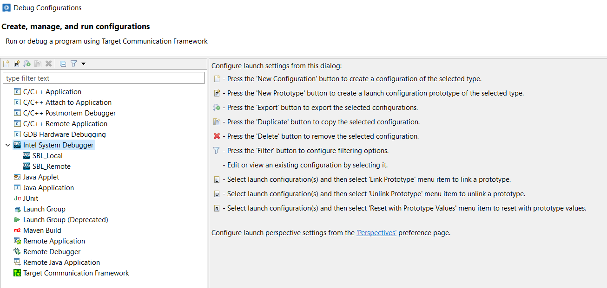
- It will open the new window with below option to create new debug configuration, In the Dialog box, Choose the “Intel System Debugger” and click the “New Configuration Button”.
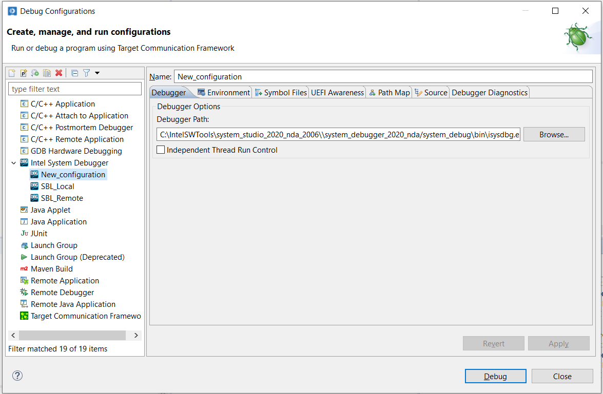
- It will show the new debug configuration Window as below:
- Provide some meaningful name (for example SBL_Debug).
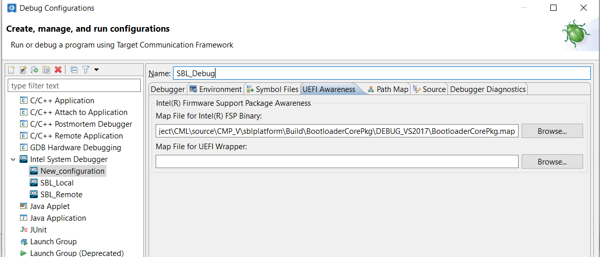
- In order to load the Symbols, we need to load the consolidated Map file in Build folder, Choose the UEFI Awareness tab, Choose the “sblplatformBuildBootloaderCorePkgDEBUG_VS2017BootloaderCorePkg.map” for “Map File For Intel FSP Binary” file input.
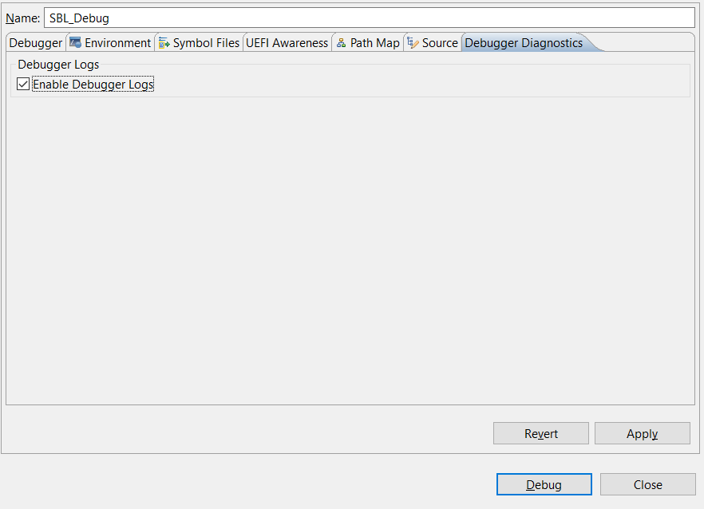
- Choose the “Debugger Diagnostics” tab, and Check the “Enable Debugger Logs” checkbox. This will enable logs of Intel(R) System Debugger for every debug session in your workspace.
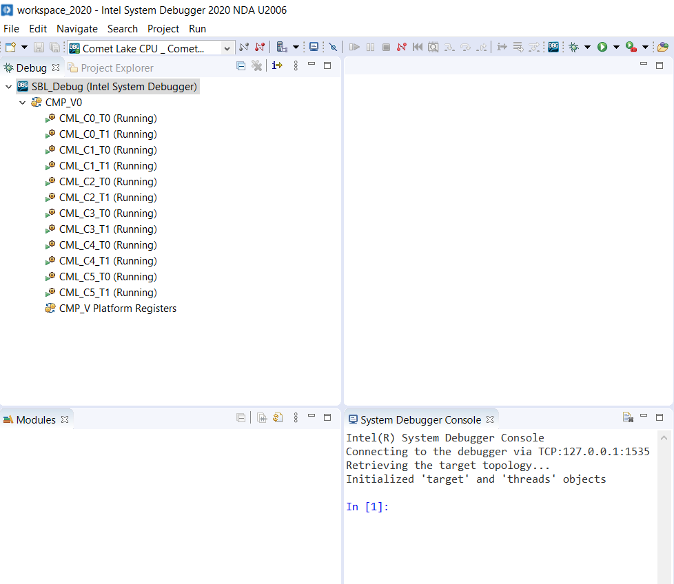
- Click the Debug, we can see the CPU status and also Intel(R) System Debugger console will be enabled.
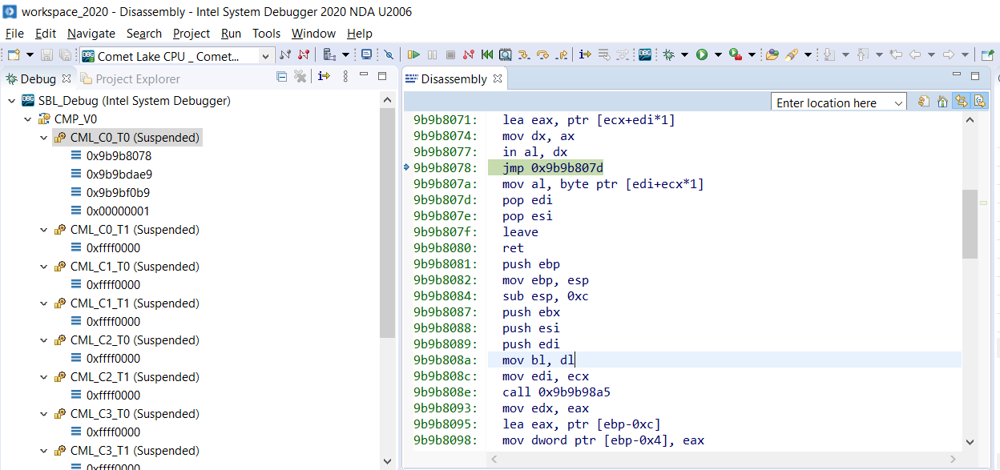
- Choose the target CMP_V0 and click the “Suspend” or “Pause” Button to stop running.
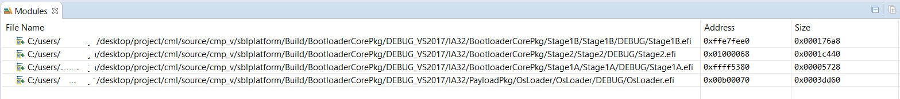
- We can see that all the CPUs are in suspended state, and we can see in the disassembly window the current executing instruction. We can also see in the module windows that the symbols are loaded automatically.
Setting up Reset Break Point:
- Go to Breakpoints Window, Press the “+” Button.
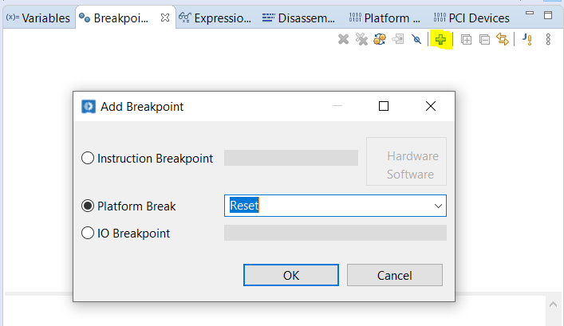
- Choose the “Platform Breakpoint” as type.
- Choose “Reset” as an option.
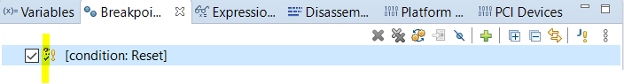
- Press OK to set the Reset Breakpoint. You can see Reset breakpoint as below in the Breakpoint Window.
Note
Please check for Tick symbol (as highlighted), this ensures the Breakpoint is active. After Every Warm reset, all breakpoints will be disabled (some limitation). Please uncheck and check the Breakpoint check box to enable the Breakpoints. All Breakpoints operation (Create, Enable, Disable) should be done when CPU is in suspend state.
- Press Go. This will start CPU run mode.
Reset Break:
- In the Debug menu, Click the “Warm Reset” button (highlighted below), it will perform the Warm reset of your board.
You can also see below status update in the System Debugger console:
INFO: Target reset Started
INFO: Target reset Completed
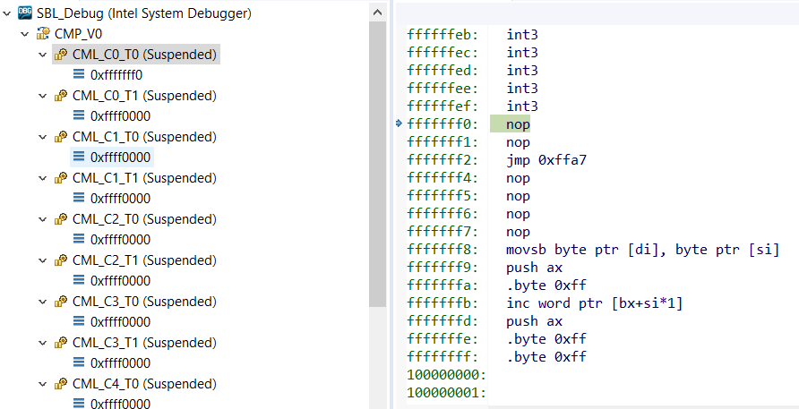Once reset is completed, CPU will halt at the Reset vector as below:
Setting up Function Break Point:
- We can Create the Function Breakpoint in stage1A and Stage1B.
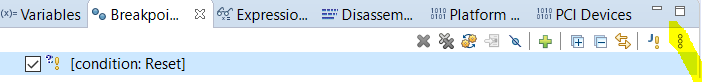
- Click the “View menu” option (three vertical dots) as highlighted below
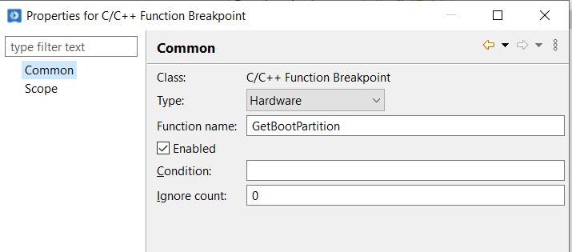
- And choose the “Add Function Breakpoint (C/C++)”
- Choose the BreakPoint type as Hardware Breakpoint.
- Choose the Function Name which is the function that you want to halt. For example “GetBootPartitition”.
- Press Apply and Close.
- New Breakpoint will be created as will be shown as below:
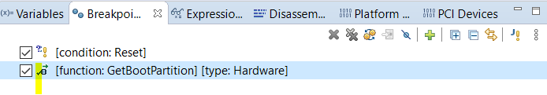
- In above image, highlighted Tick means the Breakpoint is enabled.
- And also please confirm the status of Breakpoint by Selecting the Breakpoint, Right Click and choose Breakpoint properties and check status. If the breakpoint is set properly, then it should as below:
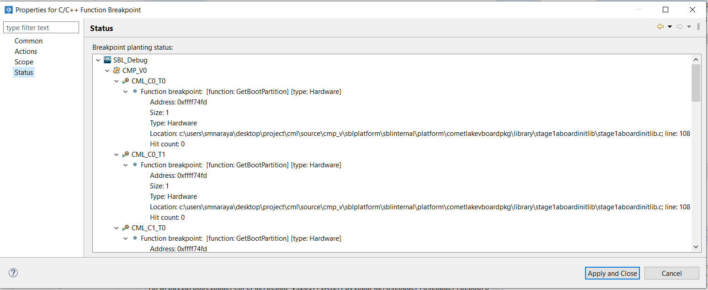
- If the Breakpoint is disabled, then it will show status as below
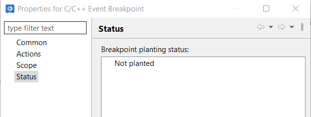
- Press go button. Then it will stop in the breakpoint as below:
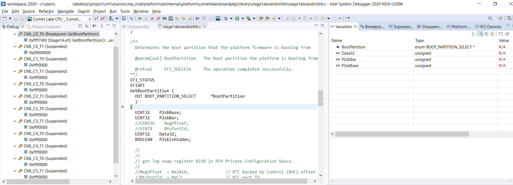
- Then you can step into the function, we can see the all variables values, CPU registers and also all peripheral register space.
Video
Debugging Using Intel(R) System Debugger
References